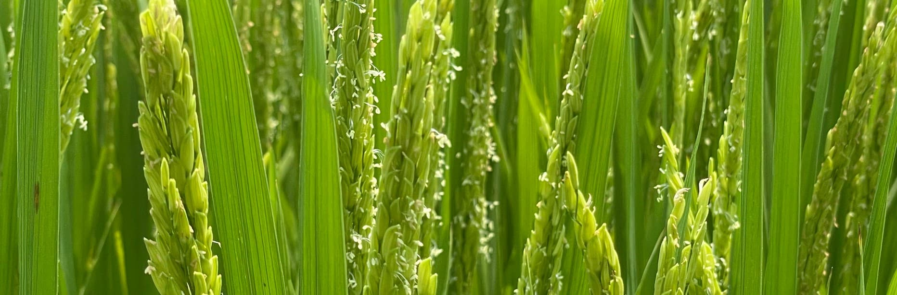

Mưa từng ngày đặt cạnh việc đã làm và vấn đề đã gặp trên đồng. Nhìn một lượt là thấy đợt sâu bệnh rơi vào sau chuỗi mưa nào, đợt khô nước trùng với quãng nào không mưa.
Chạm vào mỗi mốc để xem chi tiết. Chấm sáng cho biết mùa vụ đang ở đâu.